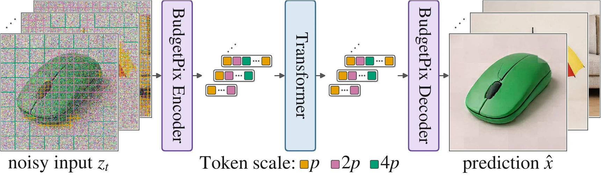
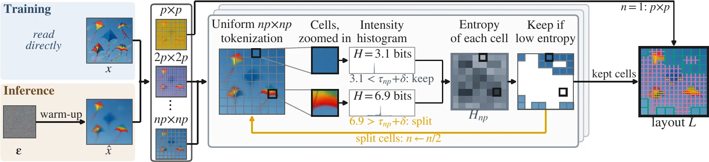
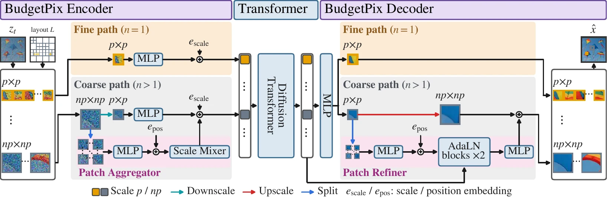

BudgetPix: Compute-Adaptive Tokenization for Pixel-Space Image Diffusion
1University of Illinois Urbana-Champaign 2Google
arXiv preprint, 2026
†Work done during an internship at Google. ‡Joint last authors.
Unofficial, open-source implementation, taken from budgetpix/BudgetPix-public: a public reimplementation of BudgetPix: compute-adaptive tokenization for pixel-space image diffusion (JiT, MiniT2I, PixelDiT, pMF).
BudgetPix Across Budgets
BudgetPix: one model, any compute budget. Our pixel-space image generator adapts computation to image content at inference time. Same prompt, same noise, from 100% down to just 10% of the tokens.
Abstract
Most image generation models rely on uniform tokenization, allocating the exact same computational budget to equally-sized image patches. This static paradigm cannot adapt to different resource constraints at inference time, and yields suboptimal quality-cost tradeoff by devoting the same effort to both plain backgrounds and intricate details. We propose BudgetPix, an adaptive tokenization framework that dynamically allocates compute based on visual complexity and spatial layout, enabling flexible computational budgeting at inference time. BudgetPix comprises three key components: (1) an adaptive encoder that maps a fixed-size image to a variable-length token sequence using an entropy-guided quadtree alongside a multi-scale patch embedder; (2) a scale-aware decoder reconstructs fixed-resolution images from multi-scale token sets; and (3) a flexible training and sampling schedule that enables pixel-space denoisers to operate across variable token counts. BudgetPix seamlessly integrates with existing pixel-space diffusion architectures, enabling a single checkpoint to be operated at a wide range of compute budgets. Evaluated on text-to-image generation, BudgetPix matches the fidelity of MiniT2I-L at 512² (GenEval: 0.874 vs. 0.882) and PixelDiT at 1024² (0.725 vs. 0.721) using just 25% of the original compute budget. In class-conditional generation using a MeanFlow backbone, BudgetPix requires merely 60% of the full compute budget to produce images with near-zero quality degradation, observing a marginal 0.8-point increase in FID (3.46 vs. 2.65). Comprehensive assessments by human and VLM judges confirm that BudgetPix establishes a significantly improved quality-efficiency tradeoff over prior budget-adaptive baselines.
Method Comparison
At low token budgets, BudgetPix stays more faithful to the full-budget image, at higher quality, than the other baselines.
Method



BibTeX
@article{kara2026budgetpix,
title={BudgetPix: Compute-Adaptive Tokenization for Pixel-Space Image Diffusion},
author={Ozgur Kara and Yujia Chen and Daniel Watson and David Forsyth and James Matthew Rehg and Wen-Sheng Chu and Du Tran},
journal={arXiv preprint arXiv:2610.12307},
year={2026}
}
Acknowledgements
Thanks to the authors of JiT, pixel MeanFlow, MiniT2I, PixelDiT and IRIS-3B for releasing their models, which BudgetPix builds on.